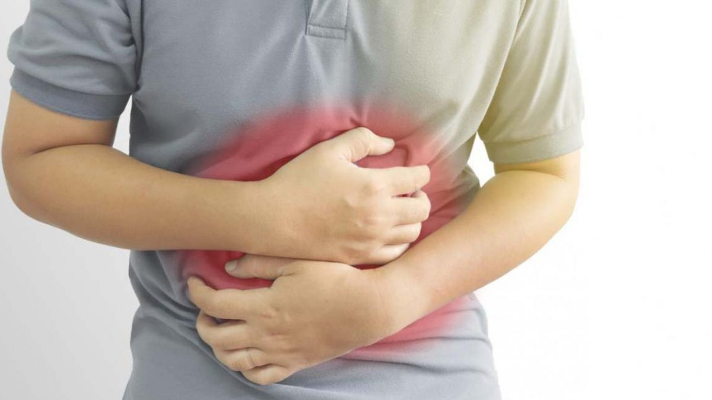
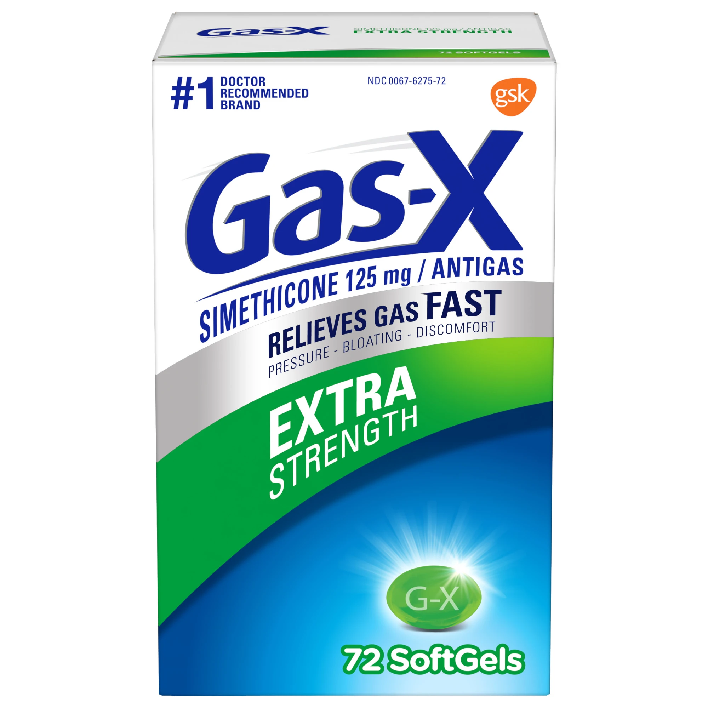
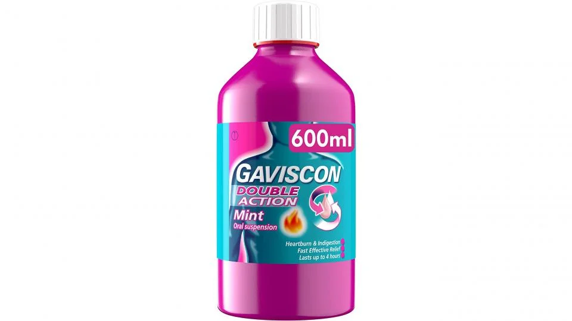

Mostly the reason for stomach pain is indigestion of food due it causes problems like acidity.
Usually stomach pain includes bloating,
indigestion
,nausea,and reflux, and it may feel
sharp,stabbing,aching or dull.
Medication for Stomach Pain
- Gas Pain:
- 
For gas pain, Medicine that has the ingredient simethicone can help get rid of it.For that purpose one can use
medicine like "Gas-X" which helps in realesing gas inside of stomach which is causing pain.
- Heart pain:
-

For heartburn from gastroesophageal reflux disease (GERD), try an antacid or acid reducer.It helps in
reducing heartburn medicine for heartburn stimulates acid production,especially after meals so it is
adviced to take it 30 minutes before meals.
- Home Remedies:
-
You might try a heating pad to ease belly pain. Chamomile or peppermint tea may help with gas. Be sure to drink
plenty of clear fluids so your body has enough water.